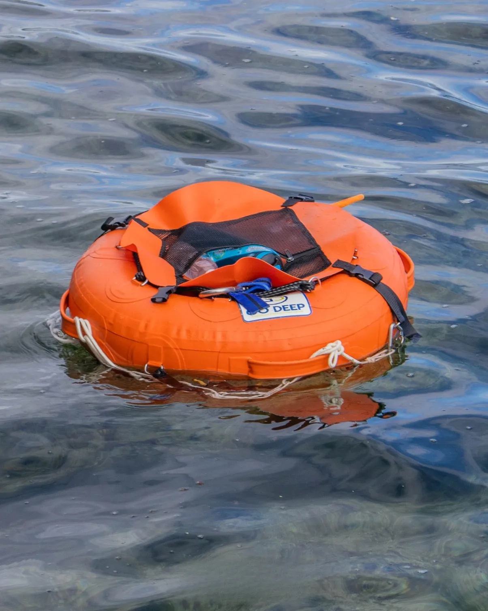

協調運動障害とスクーバダイビング
〜ビーチダイビング編〜
目的
協調運動障害下でのスクーバダイビングの可能性を探る
前提
現時点での仮案であり、実施時には現場の地形・波浪・足場および担当インストラクターの判断によって変更する。
報告者について
2001 年頃まで NAUI アシスタント・インストラクター、ダイブマスター候補生として活動し、2004 年よりダイビング活動を中断。その後 21 年間のブランクの後 2025 年よりボートダイビングから再開。
身体的前提条件
- 現在協調運動障害で 3 級の手帳を持っている
- 歩行時に急激な方向転換をする際に、バランスを崩しそうになり、ふらつく
- バランスを崩しそうなシーンは、方向転換時に限られる。
- 現在転倒予防のために登山用ストックを利用している。
転倒を予防できるように、ちょこちょこと地面にストックを当てながら、バランスを取って歩行している
(あくまで転倒予防でがっつりストックに体重を預けたりはしていない) - 上記以外の所見は特になし。
場所
本稿では須磨海水浴場とする。
環境前提条件
- 想定エントリー・エキジットポイントは砂、玉砂利などのビーチを想定する。
- 突堤が存在するので利用することを考える。
- 突堤に手をかけてエントリー・エキジット時の転倒予防に突堤を寄与させることを考える。
- 転倒予防が困難なために岩礁でのエントリーは除外する (須磨海水浴場には存在しない)。
海況など
<<本項は実施後に更新される。>>
予想されるリスクシーン
現在の障害状態の特質から、リスクはボートダイブのときと同様に、水中ではなく陸上で高くなると予測される。
- ビーチ水際での転倒による溺水。
- 突堤からの不慮の落水による溺水。
- 移動時に砂に足をとられることによる転倒、怪我。
準備の検討
全ての器材を装着し、準備とチェックを終えた状態でエントリーできるボートダイビングと異なり、ビーチダイビングでは、陸上から浅水域、水面、水中へと環境が連続的に変化する。
そのため本ケースでは、転倒リスクが高いエントリー・エキジット時に身体へ加わる重量と、同時に処理しなければならない作業をできるだけ減らすことを重視する。
特に波打ち際や浅水域では、足場が不安定であることに加え、波や浮力の影響によって身体の安定性が変化する。
この区間では、スクーバユニットやウェイトなどの重量物を可能な限り身体から切り離し、安全に移動できる状態を確保することが望まれる。
そのため、器材の一時保持と水面での装着・脱装を補助するためにダイビングフロートを使用する。

使用するフロートについては、ウェイトその他の器材を一時的に保持できる十分な浮力と安定性があることを事前に確認する。
また、エントリー・エキジット時には本人が転倒防止と自身の移動に集中できるよう、スクーバユニット、ウェイト、フロート等の運搬、投入、保持、回収について必要に応じてスタッフの支援を依頼する。
具体的には、以下の準備を行う。
- 使用するダイビングフロートの浮力、安定性および器材保持方法を事前に確認する。
- ダイビングフロートの運搬、設置、保持および回収方法を担当スタッフと事前に打ち合わせ、確認する。
- スクーバユニットおよびウェイトを、エントリー前またはエキジット後に一時的にフロート上または水面で保持できるようにする。
- エントリー・エキジット時に、本人が担当する動作とスタッフに依頼する作業を事前に確認する。
- 実際の海況、波打ち際の地形、水深、足場を確認し、事前に想定した方法が不適切であれば現場で変更する。
エントリーとエグジットの方法の検討
現時点で想定している方法は以下の通りである。実施時には、この手順そのものの成立性についても評価する。
前提条件
- 最大の課題となるはずのエントリー・エキジット時に、もっとも身体的負荷が少なく、より安全と想定できる方法を採用すること。
- ダイビングポイントに、あまり流れがないこと。流れがある環境の場合は今後の研究課題とする。
- 穏やかな海況であること。それ以外の環境の場合は今後の研究課題とする。
エントリー方法の検討
ビーチからエントリーの場合
- スクーバユニットは安全な場所で組み立てセルフチェックも終わらせておく。
- スクーバユニットを自力で運ぶのは転倒リスクが無視できないため、スクーバユニットの運搬はスタッフに依頼する。
- エントリーポイントに到着したら、バルブを開け、セルフチェックを行い、BCD に給気して、エントリー前に予め水面に投入する。投入はスタッフに依頼する。
- ウェイトベルトはダイビングフロートに乗せておく。
- 海況によってはスタッフにスクーバユニットとフロートの保持を依頼する。
- エントリーし、ビーチの水底に座った状態で３点セットを装着する。エントリーは突堤に手を着いてバランスを取るのが望ましい。
- 腰より少し高いところまで移動し、スクーバユニットとウェイトを装着する。
- スタッフチェック、バディチェック、セルフチェックを行う。
- 潜降
突堤からエントリーの場合
- スクーバユニットは安全な場所で組み立てセルフチェックも終わらせておく。
- スクーバユニットを自力で運ぶのは転倒リスクが無視できないため、スクーバユニットの運搬はスタッフに依頼する。
- エントリーポイントに到着したら、バルブを開け、セルフチェックを行い、BCD に給気して、エントリー前に予め水面に投入する。投入はスタッフに依頼する。
- ウェイトベルトはダイビングフロートに乗せておく。ウェイトベルトをフロートに乗せるのはスタッフに依頼する。
- 海況によっては先にエントリーしたスタッフにスクーバユニットとフロートの保持を依頼する。
- スキンダイビング装備で入水し、水面でスクーバユニットとウェイトベルトを装着する。
- 水面でスタッフチェック、バディチェック、セルフチェックを行う。
- 潜降
エキジット方法の検討
- 浮上
- 座れる水深まで戻る。
- スクーバユニット、ウェイトベルトを脱装し、運搬をスタッフに依頼する。
- 四つん這い状態でエキジット。
フィンは脱いでエグジットした方がいいかも。
ダイビング後
通常のログブック以外に、後日実施レポートとしてまとめる。
実施レポート
<<後日記載する>>
ビーチダイビング実施の前提
<<後日記載する>>
どのようなエクスペリエンスだったか
エントリー
<<後日記載する>>
水中
<<後日記載する>>
エグジット
<<後日記載する>>
協調運動障害がある場合の最重要事項
<<後日記載する>>
最後に
<<後日記載する>>
謝辞
<<後日記載する>>